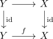
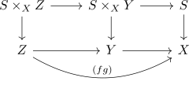

F-descendable topology
Definition / Proposition
Let $\mathcal{C}$ be a small category, $\mathcal{F}$ a collection of presheaves on $\mathcal{C}$. For an object $X \in \mathcal{C}$ define
Then $\mathrm{Cov}_{\mathcal{F}}(X)$ forms a topology on $\mathcal{C}$.
Furthermore each element of $\mathcal{F}$ is a sheaf with respect to the topology. see:
Proof
contains representables
So let $X \rightarrow X$ be the representable sieve. Then note that the pullback along any $f: Y \rightarrow X$ is given by

(cf. square with parallel isos as pullback) so we need to show that each element in $\mathcal{F}$ satisfies descent with respect to the sieve $Y \rightarrow Y \in \mathrm{Sieve}(Y)$.
This follows trivially.
pullback condition
Lte $S \in \mathrm{Cov}_{\mathcal{F}}(X)$ and $f: Y \rightarrow X$, then we need to show that $f^*(S) \in \mathrm{Cov}_{\mathcal{F}}(Y)$. So let $g: Z \rightarrow Y$ be another map in $\mathcal{C}$, then we can glue

and conclude that $g^* f^*(S) = (fg)^*(S)$. by assumption each element in $\mathcal{F}$ satisfies descent with respect to $(fg)^*(S)$, so in particular also wrt to $g^*f^*(S)$
Let $S \in \mathrm{Cov}_{\mathcal{F}}(X)$ and $R \in \mathrm{Sieve}(X)$ such that for all $g \in S(Z)$ we have $g^*(R) \in \mathrm{Cov}_{\mathcal{F}}(Z)$, then $R\in \mathrm{Cov}_{\mathcal{F}}(X)$. This means that for all $f: Y \rightarrow X$ need to show that $f^*(R)$ is $\mathcal{F}$ descendable.
Let us consider the objects $f^*(S)\in \mathrm{Cov}_{\mathcal{F}}(Z)$ by assumption.
sheaf
- follows by construction